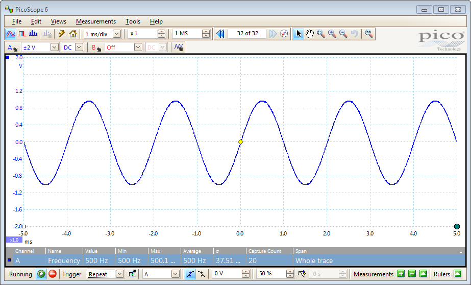
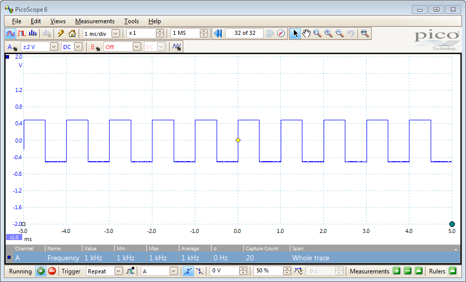
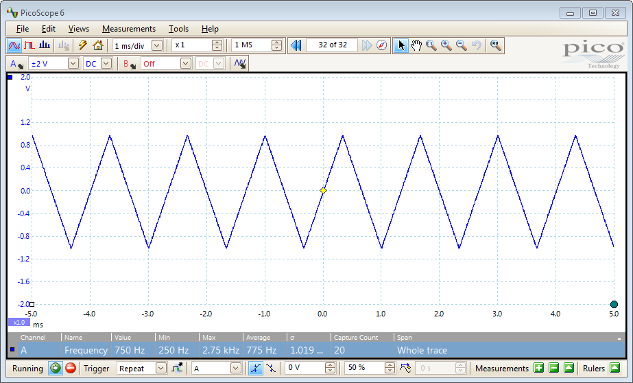
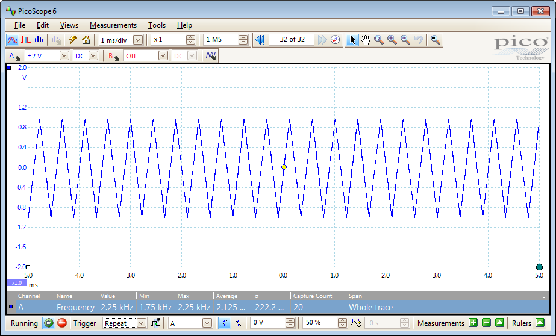
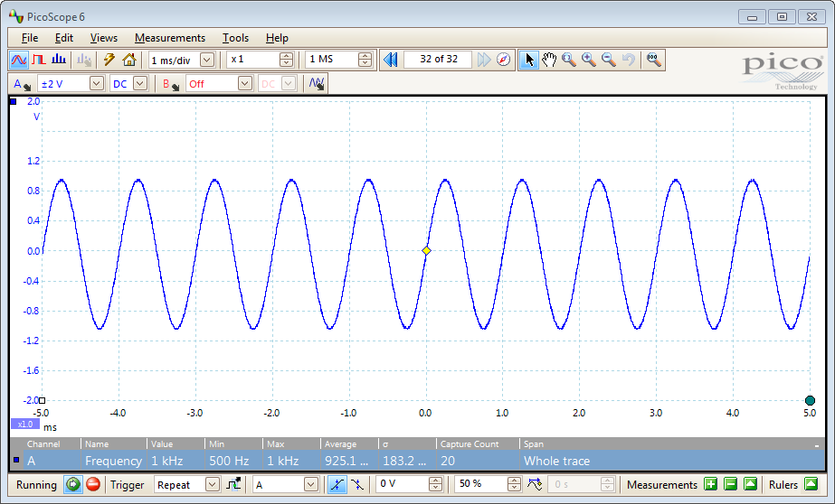
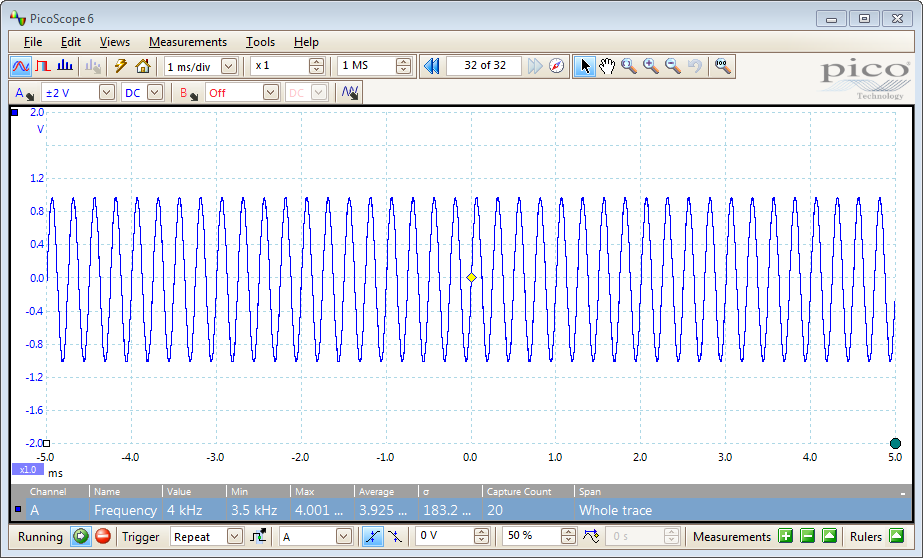
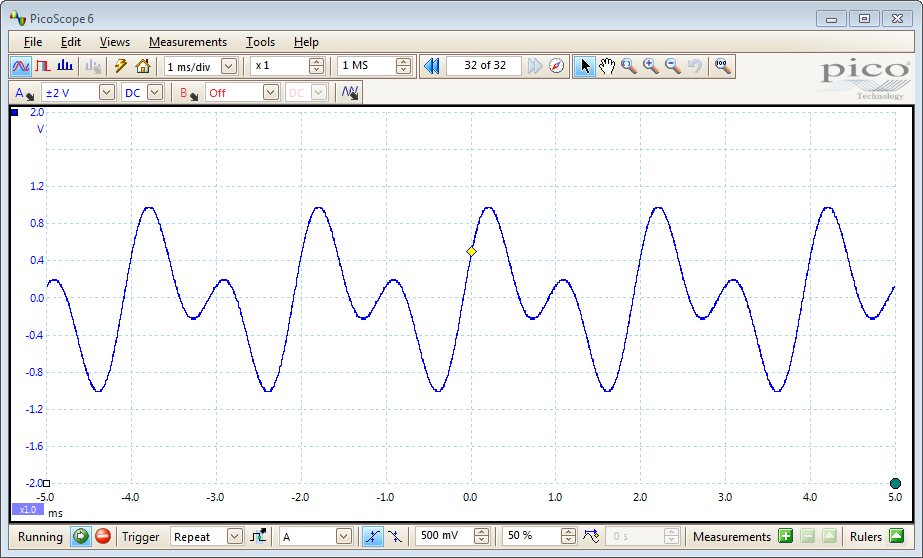
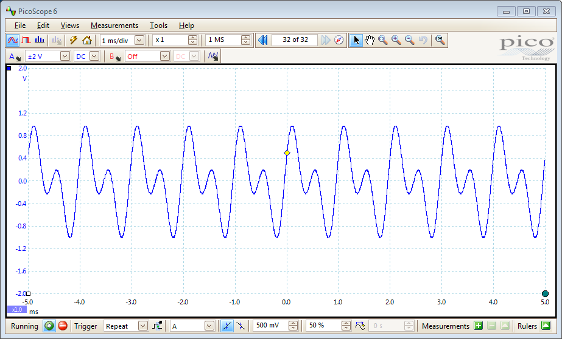
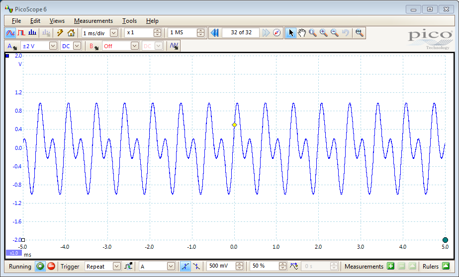
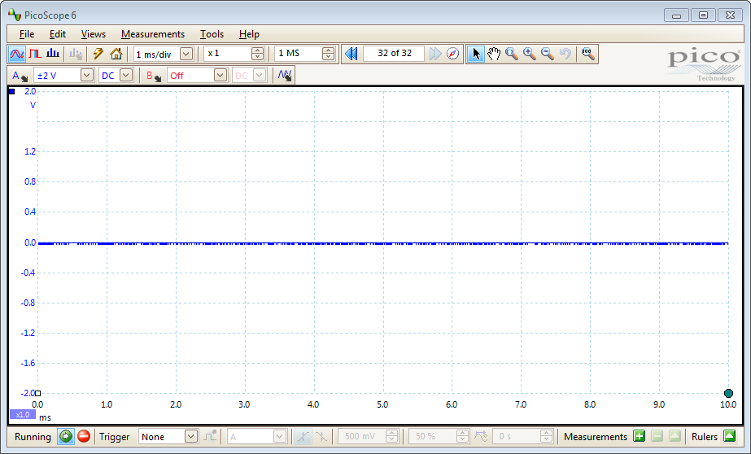

PicoScope 2000 Series Instrument Driver Signal Generator Example
Code for communicating with an instrument in order to control the signal generator.
This is a modified version of a machine generated representation of an instrument control session using a device object. The instrument control session comprises all the steps you are likely to take when communicating with your instrument.
These steps are:
- Create a device object
- Connect to the instrument
- Configure properties
- Invoke functions
- Disconnect from the instrument
To run the instrument control session, type the name of the file, PS2000_ID_Sig_Gen_Example, at the MATLAB command prompt.
The file, PS2000_ID_SIG_GEN_EXAMPLE.M must be on your MATLAB PATH. For additional information on setting your MATLAB PATH, type 'help addpath' at the MATLAB command prompt.
Example: PS2000_ID_Sig_Gen_Example;
Description: Demonstrates how to set properties and call functions in order to control the signal generator output of a PicoScope 2000 Series Oscilloscope (applies to PicoScope 2203, 2204, 2204A, 2205 & 2205A models ONLY).
The following examples are demonstrated below:
- Generate a waveform of constant frequency with/without offset.
- Generate a waveform and sweep between the specified start/stop frequency.
- Generate an arbitrary waveform of constant frequency with/without offset.
- Generate an arbitrary waveform sweep between the specified start/stop frequency.
- Turn off the signal generator.
Copyright: © 2013 - 2016 Pico Technology Ltd. All rights reserved.
Contents
Test Setup
For this example the 'AWG' connector of the oscilloscope was connected to Channel A on another PicoScope oscilloscope running the PicoScope 6 software application. Images, where shown, depict output, or part of the output in the PicoScope 6 display.
Note: The various signal generator functions called in this script may be combined with the functions used in the various data acquisition examples in order to output a signal and acquire data. These functions should be called prior to the start of data collection.
Clear Command Window and Close any Figures
clc;
close all;
Load Configuration Information
PS2000Config;
Device Connection
% Create a device object. ps2000DeviceObj = icdevice('picotech_ps2000_generic.mdd'); % Connect device object to hardware. connect(ps2000DeviceObj);
Copyright © 2013 - 2016 Pico Technology Ltd. All rights reserved.
PicoScope 2000 Series MATLAB Instrument Driver
Opening PicoScope 2000 Series device...
Instrument Device Object Using Driver : picotech_ps2000_generic.mdd
Instrument Information
Type: Oscilloscope
Manufacturer: Pico Technology Ltd.
Model: PicoScope 2000 Series
Driver Information
DriverType: MATLAB generic
DriverName: picotech_ps2000_generic.mdd
DriverVersion: 1.1.19
Communication State
Status: open
Setting Device Parameters...
Default Channel Setup:-
Channel A:-
Enabled: True
Coupling: DC
Range: 5V
Channel B:-
Enabled: True
Coupling: DC
Range: 5V
Turning off Equivalent Time Sampling...
ps2000SetEts: ETS switched off.
Turning off trigger...
Default data collection parameters:-
Number of samples: 1024
Block sampling interval: 0.66 ms
Oversampling factor: 1
Default Streaming mode parameters:-
Sampling interval: 0.001 ms
Overview buffer size: 15000 samples
Streaming auto stop: 1
Default Signal generator parameters:-
Start frequency: 1000 Hz
Stop frequency: 1000 Hz
Offset voltage: 0 mV
Peak to Peak voltage: 2000 mV
Initialisation complete.
Connected to PicoScope 2000 Series device:-
Instrument Model: 2205A
Batch/Serial Number: GRA01/002
Number of Channels: 2
Buffer memory: 16384 samples
Maximum sampling rate: 200 MS/s
Signal Generator Type: Arbitrary Waveform Generator
Obtain Signal Generator Group Object
Signal Generator properties and functions are located in the Instrument Driver's Signalgenerator group.
sigGenGroupObj = get(ps2000DeviceObj, 'Signalgenerator');
sigGenGroupObj = sigGenGroupObj(1);
Built-in Signal Generator
Demonstrate how to ouput waveforms at constant frequency and how to sweep from one frequency to another.
% Use the evalin command in the input arguments line in the Test and % Measurement Tool using the 'base' workspace to load in variables from the % MATLAB environment. When writing a script, the 'evalin' command is not % required. % Output a sine wave. % % Default offset (0mV) and peak to peak voltage (2000mV) values are used. % Set the startFrequency to output a waveform with a constant frequency of % 500Hz. set(sigGenGroupObj, 'startFrequency', 500); % Wave type : ps2000Enuminfo.enPS2000WaveType.PS2000_SINE [status.sigGenSimple] = invoke(sigGenGroupObj, 'setSigGenBuiltInSimple', ... ps2000Enuminfo.enPS2000WaveType.PS2000_SINE);

pause(5); % Output a square wave. % % Change the peak to peak voltage to 1000mV (+/- 500mV) and set the output % frequency to 1000Hz. set(sigGenGroupObj, 'peakToPeakVoltage', 1000); set(sigGenGroupObj, 'startFrequency', 1000); % Wave type : 1 (ps2000Enuminfo.enPS2000WaveType.PS2000_SQUARE) [status.sigGenSimple] = invoke(sigGenGroupObj, 'setSigGenBuiltInSimple', 1);

pause(5); % Output a triangle waveform and sweep up from start to stop frequency. % % Change the peak to peak voltage back to 2000mV. Set the start frequency % to 250Hz and set the stop frequency to 3000Hz. set(sigGenGroupObj, 'peakToPeakVoltage', 2000); set(sigGenGroupObj, 'startFrequency', 250); set(sigGenGroupObj, 'stopFrequency', 3000); % Wave type : 2 (ps2000Enuminfo.enPS2000WaveType.PS2000_TRIANGLE) % Increment : 500Hz (from PS2000Config file) % Dwell time : 1s (from PS2000Config file) % Sweep type : 0 (ps2000Enuminfo.enPS2000SweepType.PS2000_UP - from PS2000Config file) % Num. sweeps : 0 (sweep continuously - from PS2000Config file) [status.sigGenSimple] = invoke(sigGenGroupObj, 'ps2000SetSigGenBuiltIn', ... ps2000Enuminfo.enPS2000WaveType.PS2000_TRIANGLE, ps2000ConfigInfo.sigGen.builtIn.increment, ... ps2000ConfigInfo.sigGen.builtIn.dwellTime, ps2000ConfigInfo.sigGen.sweepType, ps2000ConfigInfo.sigGen.sweeps);


pause(5); % Output a sine wave and sweep up and down from start to stop frequency in % 500Hz steps 5 times % Offset voltage : 0mV % Peak to peak : 2000mV % Wave type : Sine (ps2000Enuminfo.enPS2000WaveType.PS2000_SINE) % Start frequency : 500Hz % Stop frequency : 5000Hz % Increment : 500Hz % Dwell time : 2 seconds % Sweep type : 2 (ps2000Enuminfo.enPS2000SweepType.PS2000_UPDOWN) % Num. sweeps : 5 set(sigGenGroupObj, 'offsetVoltage', 0); set(sigGenGroupObj, 'peakToPeakVoltage', 2000); set(sigGenGroupObj, 'startFrequency', 500); set(sigGenGroupObj, 'stopFrequency', 5000); [status.sigGenSimple] = invoke(sigGenGroupObj, 'ps2000SetSigGenBuiltIn', ... ps2000Enuminfo.enPS2000WaveType.PS2000_SINE, 500, 2, 2, 5);


Arbitrary Waveform Generator
Demonstrate how to output a defined arbitrary waveform at constant frequency and how to sweep the out from one frequency to another. The waveform should be defined in the range -1 (min) to +1 (max).
% Output an arbitrary waveform of constant frequency. % % Set the offsetVoltage, peakToPeakVoltage and startFrequency properties to % output a waveform with 0mV offset, peak to peak voltage of 2000mV and a % frequency of 500Hz. set(sigGenGroupObj, 'offsetVoltage', 0); set(sigGenGroupObj, 'peakToPeakVoltage', 2000); set(sigGenGroupObj, 'startFrequency', 500); % Waveform : As defined in the PS2000Config file. [status.sigGenArbitrarySimple] = invoke(sigGenGroupObj, 'setSigGenArbitrarySimple', ... ps2000ConfigInfo.sigGen.awg.waveform);

pause(5); % Output an arbitrary wave and sweep up from start to stop frequency in % 50Hz steps. % % Increment : 50 Hz % Dwell time : 100 milliseconds % Waveform : As defined in the PS2000Config file. % Sweep type : 0 (PS2000_UP) % Num. sweeps : 1 set(sigGenGroupObj, 'offsetVoltage', 0); set(sigGenGroupObj, 'peakToPeakVoltage', 2000); set(sigGenGroupObj, 'startFrequency', 500); set(sigGenGroupObj, 'stopFrequency', 5000); [status.sigGenArbitrary] = invoke(sigGenGroupObj, 'ps2000SetSigGenArbitrary', ... 50, 0.1, ps2000ConfigInfo.sigGen.awg.waveform, 0, 1);


pause(5);
Turn Off Signal Generator
Turn off the signal generator (set the output to 0mV DC).
[sigGenOffStatus] = invoke(sigGenGroupObj, 'setSigGenOff');

Disconnect
Disconnect device object from hardware.
disconnect(ps2000DeviceObj); delete(ps2000DeviceObj);
Connection to PicoScope 2205A with serial number GRA01/002 closed successfully. Libraries unloaded successfully.